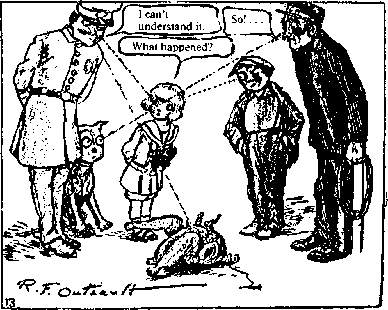

It is not very difficult to determine the essence of the “novella” as a literary genre: Everything is organized around the question, “What happened? Whatever could have happened?” The tale is the opposite of the novella, because it is an altogether different question that the reader asks with bated breath: What is going to happen? Something is always going to happen, come to pass. Something always happens in the novel also, but the novel integrates elements of the novella and the tale into the variation of its perpetual living present (duration). The detective novel is a particularly hybrid genre in this respect, since most often the something = Xthat has happened is on the order of a murder or theft, but exactly what it is that has happened remains to be discovered, and in the present determined by the model detective. Yet it would be an error to reduce these different aspects to the three dimensions of time. Something happened, something is going to happen, can designate a past so immediate, a future so near, that they are one (as Husserl would say) with retentions and protentions of the present itself. Nevertheless, the distinction is legitimate, in view of the different movements that animate the present, are contemporaneous with it: One moves with it, another already casts it into the past from the moment it is present (novella), while another simultaneously draws it into the future (tale). We are lucky to have treatments of the same subject by a tale writer and a novella writer: two lovers, one of whom dies suddenly in the other’s room. In Maupassant’s tale, “Une ruse” (An artifice), everything revolves around these questions: What is going to happen? How will the survivor extricate himself from the situation? What will the third party-savior, in this case a doctor, think of? In Barbey d’Aurevilly’s novella, “Le rideau cramoisi” (The crimson curtain), everything revolves around: Something happened, but what? That is the question, not only because it is really not known what the cold young woman just died from, but also because it will never be known why she gave herself to the petty officer, or how the third party-savior, here the colonel of the regiment, was able to arrange things.1 It should not be thought that it is easier to leave things open-ended: for there to be something that has happened that we will never know about, or even several things in a row, requires no less minute attention and precision than the contrary case, when the author must invent the details of what will need to be known. You will never know what just happened, or you will always know what is going to happen: these are the reasons for the reader’s two bated breaths, in the novella and the tale, respectively, and they are two ways in which the living present is divided at every instant. In the novella, we do not wait for something to happen, we expect something to have just happened. The novella is a last novella, whereas the tale is a first tale. The “presence” of the tale writer is completely different from that of the novella writer (and both are different from that of the novelist). Let us not dwell too much on the dimensions of time: the novella has little to do with a memory of the past or an act of reflection; quite to the contrary, it plays upon a fundamental forgetting. It evolves in the element of “what happened” because it places us in a relation with something unknowable and imperceptible (and not the other way around: it is not because it speaks of a past about which it can no longer provide us knowledge). It may even be that nothing has happened, but it is precisely that nothing that makes us say, Whatever could have happened to make me forget where I put my keys, or whether I mailed that letter, etc.? What little blood vessel in my brain could have ruptured? What is this nothing that makes something happen? The novella has a fundamental relation to secrecy (not with a secret matter or object to be discovered, but with the form of the secret, which remains impenetrable), whereas the tale has a relation to discovery (the form of discovery, independent of what can be discovered). The novella also enacts postures of the body and mind that are like folds or envelopments, whereas the tale puts into play attitudes or positions that are like unfoldings and developments, however unexpected. Barbey has an evident fondness for body posture, in other words, states of the body when it is surprised by something that just happened. In the preface to the Diaboliques, Barbey even suggests that there is a diabolism of body postures, a sexuality, pornography, and scatol-ogy of postures quite different from those that also, and simultaneously, mark body attitudes or positions. Posture is like inverse suspense. Thus it is not a question of saying that the novella relates to the past and the tale to the future; what we should say instead is that the novella relates, in the present itself, to the formal dimension of something that has happened, even if that something is nothing or remains unknowable. Similarly, one should not try to make the distinction between the novella and the tale coincide with categories such as the fantastic, the fabulous, etc.; that is another problem, there is no reason why it should overlap. The links of the novella are: What happened? (the modality or expression), Secrecy (the form), Body Posture (the content).
Take Fitzgerald. He is a tale and novella writer of genius. He is a novella writer when he asks himself, Whatever could have happened for things to have come to this? He is the only one who has been able to carry this question to such a point of intensity. It is not a question of memory, reflection, old age, or fatigue, whereas the tale would deal with childhood, action, or impulse. Yet it is true that Fitzgerald only asks himself the question of the novella writer when he is personally worn-out, fatigued, sick, or even worse off. But once again, there is not necessarily a connection: it can also be a question of vigor, or love. It still is, even in desperate conditions. It is better to think of it as an affair of perception: you enter a room and perceive something as already there, as just having happened, even though it has not yet been done. Or you know that what is in the process of happening is happening for the last time, it’s already over with. You hear an “I love you” you know is the last one. Perceptual semiotics. God, whatever could have happened, even though everything is and remains imperceptible, and in order for everything to be and remain imperceptible forever?
Not only is there a specificity of the novella, but there is also a specific way in which the novella treats a universal matter. For we are made of lines. We are not only referring to lines of writing. Lines of writing conjugate with other lines, life lines, lines of luck or misfortune, lines productive of the variation of the line of writing itself, lines that are between the lines of writing. Perhaps the novella has its own way of giving rise to and combining these lines, which nonetheless belong to everyone and every genre. Vladimir Propp has said, with great solemnity, that the folktale must be defined in terms of external and internal movements that it qualifies, formalizes, and combines in its own specific way.2 We would like to demonstrate that the novella is defined by living lines, flesh lines, about which it brings a special revelation. Marcel Arland is correct to say that the novella “is nothing but pure lines right down to the nuances, and nothing but the pure and conscious power of the word.”3
First Novella: “In the Cage,” Henry James
The heroine, a young telegrapher, leads a very clear-cut, calculated life proceeding by delimited segments: the telegrams she takes one after the other, day after day; the people to whom she sends the telegrams; their social class and the different ways they use telegraphy; the words to be counted. Moreover, her telegraphist’s cage is like a contiguous segment to the grocery store next door, where her fiance works. Contiguity of territories. And the fiance is constantly plotting out their future, work, vacations, house. Here, as for all of us, there is a line of rigid segmentarity on which everything seems calculable and foreseen, the beginning and end of a segment, the passage from one segment to another. Our lives are made like that: Not only are the great molar aggregates segmented (States, institutions, classes), but so are people as elements of an aggregate, as are feelings as relations between people; they are segmented, not in such a way as to disturb or disperse, but on the contrary to ensure and control the identity of each agency, including personal identity. The fiance can say to the young woman, Even though there are differences between our segments, we have the same tastes and we are alike. I am a man, you are a woman; you are a telegraphist, I am a grocer; you count words, I weigh things; our segments fit together, conjugate. Conjugality. A whole interplay of well-determined, well-planned territories. They have a future but no becoming. This is the first life line, the molar or rigid line of segmentarity; in no sense is it dead, for it occupies and pervades our life, and always seems to prevail in the end. It even includes much tenderness and love. It would be too easy to say, “This is a bad line,” for you find it everywhere, and in all the other lines.
A rich couple comes into the post office and reveals to the young woman, or at least confirms, the existence of another life: coded, multiple telegrams, signed with pseudonyms. It is hard to tell who is who anymore, or what anything means. Instead of a rigid line composed of well-determined segments, telegraphy now forms a supple flow marked by quanta that are like so many little segmentations-in-progress grasped at the moment of their birth, as on a moonbeam, or on an intensive scale. Thanks to her “prodigious talent for interpretation,” the young woman grasps that the man has a secret that has placed him in danger, deeper and deeper in danger, in a dangerous posture. It does not just have to do with his love relations with the woman. James has reached the stage in his work when it is no longer the matter of the secret that interests him, even if he has succeeded in rendering it entirely banal and unimportant. Now what counts is the form of the secret; the matter no longer even has to be discovered (we never find out, there are several possibilities, there is an objective indetermination, a kind of molecularization of the secret). In relation to this man, directly with him, the young telegraphist develops a strange passional complicity, a whole intense molecular life that does not even enter into rivalry with the life she leads with her fiance. What has happened, whatever could have happened? This life, however, is not in her head, it is not imaginary. Rather, we should say that there are two politics involved, as the young woman suggests in a remarkable conversation with her fiance: a macropohtics and a micropolitics that do not envision classes, sexes, people, or feelings in at all the same way. Or again, there are two very different types of relations: intrinsic relations of couples involving well-determined aggregates or elements (social classes, men and women, this or that particular person), and less localizable relations that are always external to themselves and instead concern flows and particles eluding those classes, sexes, and persons. Why are the latter relations of doubles rather than of couples? “She was literally afraid of the alternate self who might be waiting outside. He might be waiting; it was he who was her alternate self, and of him she was afraid.”4 In any case, this line is very different from the previous one; it is a line of molecular or supple segmentation the segments of which are like quanta of deterritorialization. It is on this line that a present is defined whose very form is the form of something that has already happened, however close you might be to it, since the ungraspable matter of that something is entirely molecularized, traveling at speeds beyond the ordinary thresholds of perception. Yet we will not say that it is necessarily better.
There is no question that the two lines are constantly interfering, reacting upon each other, introducing into each other either a current of suppleness or a point of rigidity. Nathalie Sarraute, in her essay on the novel, praises English novelists, not only for discovering (as did Proust and Dostoyevsky) the great movements, territories, and points of the unconscious that allow us to regain time or revive the past, but also for inopportunely following these molecular lines, simultaneously present and imperceptible. She shows that dialogue or conversation does indeed comply with the breaks of a fixed segmentarity, with vast movements of regulated distribution corresponding to the attitudes and positions of each of us; but also that they are run through and swept up by micromovements, fine segmentations distributed in an entirely different way, unfindable particles of an anonymous matter, tiny cracks and postures operating by different agencies even in the unconscious, secret lines of disorientation or deterritorialization: as she puts it, a whole subconversation within conversation, in other words, a micropolitics of conversation.5
Then James’s heroine reaches a sort of maximum quantum in her supple segmentarity or line of flow beyond which she cannot go (even if she wanted to, there is no going further). There is a danger that these vibrations traversing us may be aggravated beyond our endurance. What happened? The molecular relation between the telegraphist and the telegraph sender dissolved in the form of the secret — because nothing happened. Each of them is propelled toward a rigid segmentarity: he will marry the now-widowed lady, she will marry her fiance. And yet everything has changed. She has reached something like a new line, a third type, a kind of line of flight that is just as real as the others even if it occurs in place: this line no longer tolerates segments; rather, it is like an exploding of the two segmentary series. She has broken through the wall, she has gotten out of the black holes. She has attained a kind of absolute deterritorialization. “She ended up knowing so much that she could no longer interpret anything. There were no longer shadows to help her see more clearly, only glare.”6 You cannot go further in life than this sentence by James. The nature of the secret has changed once again. Undoubtedly, the secret always has to do with love, and sexuality. But previously it was either only a hidden matter given in the past (the better hidden the more ordinary it was), and we did not exactly know what form to give it: See, I am bending under the burden of my secret, see what mystery resides within me. It was a way of seeming interesting, what D. H. Lawrence called “the dirty little secret,” my Oedipus, in a way. Or else the secret became the form of something whose matter was molecularized, imperceptible, unassignable: not a given of the past but the ungivable “What happened?” But on this third line there is no longer even any form — nothing but a pure abstract line. It is because we no longer have anything to hide that we can no longer be apprehended. To become imperceptible oneself, to have dismantled love in order to become capable of loving. To have dismantled one’s self in order finally to be alone and meet the true double at the other end of the line. A clandestine passenger on a motionless voyage. To become like everybody else; but this, precisely, is a becoming only for one who knows how to be nobody, to no longer be anybody. To paint oneself gray on gray. As Kierkegaard says, nothing distinguishes the knight of the faith from a bourgeois German going home or to the post office: he sends off no special telegraphic sign; he constantly produces or reproduces finite segments, yet he is already moving on a line no one even suspects.7 In any case, the telegraphic line is not a symbol, and it is not simple. There are at least three of them: a line of rigid and clear-cut segmentarity; a line of molecular segmentarity; and an abstract line, a line of flight no less deadly and no less alive than the others. On the first line, there are many words and conversations, questions and answers, interminable explanations, precisions; the second is made of silences, allusions, and hasty innuendos inviting interpretation. But if the third line flashes, if the line of flight is like a train in motion, it is because one jumps linearly on it, one can finally speak “literally” of anything at all, a blade of grass, a catastrophe or sensation, calmly accepting that which occurs when it is no longer possible for anything to stand for anything else. The three lines, however, continually intermingle.
Second Novella: “The Crack-up,” F. Scott Fitzgerald
What happened? This is the question Fitzgerald keeps coming back to toward the end, having remarked that “of course all life is a process of breaking down.”8 How should we understand this “of course”? We can say, first of all, that life is always drawn into an increasingly rigid and desiccated segmentarity. For the writer Fitzgerald, voyages, with their clear-cut segments, had lost their usefulness. There was also, from segment to segment, the depression, loss of wealth, fatigue and growing old, alcoholism, the failure of conjugality, the rise of the cinema, the advent of fascism and Stalinism, and the loss of success and talent — at the very moment Fitzgerald would find his genius. ” The big sudden blows that come, or seem to come, from outside” (p. 69), and proceed by oversignificant breaks, moving us from one term to the other according to successive binary “choices”: rich/poor… Even when change runs in the other direction, there is nothing to compensate for the rigidification, the aging that overcodes everything that occurs. This is a line of rigid segmentarity bringing masses into play, even if it was supple to begin with.
But Fitzgerald says that there is another type of cracking, with an entirely different segmentarity. Instead of great breaks, these are micro-cracks, as in a dish; they are much more subtle and supple, and occur when things are going well on the other side. If there is aging on this line, it is not of the same kind: when you age on this line you don’t feel it on the other line, you don’t notice it on the other line until after “it” has already happened on this line. At such a moment, which does not correspond to any of the ages of the other line, you reach a degree, a quantum, an intensity beyond which you cannot go. (It’s a very delicate business, these intensities: the finest intensity becomes harmful if it overtaxes your strength at a given moment; you have to be able to take it, you have to be in shape.) But what exactly happened? In truth, nothing assignable or perceptible: molecular changes, redistributions of desire such that when something occurs, the self that awaited it is already dead, or the one that would await it has not yet arrived. This time, there are outbursts and crackings in the immanence of a rhizome, rather than great movements and breaks determined by the transcendence of a tree. The crack-up “happens almost without your knowing it but is realized suddenly indeed” (p. 69). This molecular line, more supple but no less disquieting, in fact, much more disquieting, is not simply internal or personal: it also brings everything into play, but on a different scale and in different forms, with segmentations of a different nature, rhizomatic instead of arborescent. A micropolitics.
There is, in addition, a third line, which is like a line of rupture or a “clean break” and marks the exploding of the other two, their shake-up… in favor of something else? “This led me to the idea that the ones who had survived had made some sort of clean break. This is a big word and is no parallel to a jailbreak when one is probably headed for a new jail or will be forced back to the old one” (p. 81). Here, Fitzgerald contrasts rupture with structural pseudobreaks in so-called signifying chains. But he also distinguishes it from more supple, more subterranean links or stems of the “voyage” type, or even from molecular conveyances. “The famous ‘Escape’ or ‘run away from it all’ is an excursion in a trap even if the trap includes the South Seas, which are only for those who want to paint them or sail them. A clean break is something you cannot come back from; that is irretrievable because it makes the past cease to exist” (p. 81). Can it be that voyages are always a return to rigid segmentarity? Is it always your daddy and mommy that you meet when you travel, even as far away as the South Seas, like Melville? Hardened muscles? Must we say that supple segmentarity itself reconstructs the great figures it claimed to escape, but under the microscope, in miniature? Beckett’s unforgettable line is an indictment of all voyages: ” We don’t travel for the fun of it, as far as I know; we’re foolish, but not that foolish.”
In rupture, not only has the matter of the past volitized; the form of what happened, of an imperceptible something that happened in a volatile matter, no longer even exists. One has become imperceptible and clandestine in motionless voyage. Nothing can happen, or can have happened, any longer. Nobody can do anything for or against me any longer. My territories are out of grasp, not because they are imaginary, but the opposite: because I am in the process of drawing them. Wars, big and little, are behind me. Voyages, always in tow to something else, are behind me. I no longer have any secrets, having lost my face, form, and matter. I am now no more than a line. I have become capable of loving, not with an abstract, universal love, but a love I shall choose, and that shall choose me, blindly, my double, just as selfless as I. One has been saved by and for love, by abandoning love and self. Now one is no more than an abstract line, like an arrow crossing the void. Absolute deterritorialization. One has become like everybody/the whole world (tout le monde), but in a way that can become like everybody/ the whole world. One has painted the world on oneself, not oneself on the world. It should not be said that the genius is an extraordinary person, nor that everybody has genius. The genius is someone who knows how to make everybody/the whole world a becoming (Ulysses, perhaps: Joyce’s failed ambition, Pound’s near-success). One has entered becomings-animal, becomings-molecular, and finally becomings-imperceptible. “I was off the dispensing end of the relief roll forever. The heady villainous feeling continued. … I will try to be a correct animal though, and if you throw me a bone with enough meat on it I may even lick your hand.”9 Why such a despairing tone? Does not the line of rupture or true flight have its own danger, one worse than the others? Time to die. In any case, Fitzgerald proposes a distinction between the three lines traversing us and composing “a life” (after Maupassant). Break line, crack line, rupture line. The line of rigid segmentarity with molar breaks; the line of supple segmentation with molecular cracks; the line of flight or rupture, abstract, deadly and alive, nonsegmentary.
Third Novella: “The Story of the Abyss and the Spyglass,” Pierrette Fleutiaux10
Some segments are more or less near, and others more or less distant. The segments seem to encircle an abyss, a kind of huge black hole. On each segment there are two kinds of lookouts, near-seers and far-seers. What they watch for are the movements, outbursts, infractions, disturbances, and rebellions occurring in the abyss. But there is a major difference between the two types of lookouts. The near-seers have a simple spyglass. In the abyss, they see the outline of gigantic cells, great binary divisions, dichotomies, well-defined segments of the type “classroom, barracks, low-income housing project, or even countryside seen from an airplane.” They see branches, chains, rows, columns, dominoes, striae. Once in a while along the edges they discover a misshapen figure or a shaky contour. Then they bring out the terrible Ray Telescope. It is used not to see with but to cut with, to cut out shapes. This geometrical instrument, which emits a laser beam, assures the dominion of the great signifying break everywhere and restores the momentarily threatened molar order. The cutting telescope overcodes everything; it acts on flesh and blood, but itself is nothing but pure geometry, as a State affair, and the near-seers’ physics in the service of that machine. What is geometry, what is the State, and what are the near-seers? These are meaningless questions (“I am speaking literally”) because it is not so much a question of defining something as effectively drawing a line; not a line of writing but a line of rigid segmentarity along which everyone will be judged and rectified according to his or her contours, individual or collective.
Very different is the situation of those with long-distance vision, the far-seers, with all their ambiguities. There are very few of them, at most one per segment. Their telescopes are complex and refined. But they are in no way leaders. And what they see is entirely different from what the others see. They see a whole microsegmentarity, details of details, “a roller coaster of possibilities,” tiny movements that have not reached the edge, lines or vibrations that start to form long before there are outlined shapes, “segments that move by jerks.” A whole rhizome, a molecular segmentarity that does not permit itself to be overcoded by a signifier like the cutting machine, or even to be attributed to a given figure, a given aggregate or element. This second line is inseparable from the anonymous segmentation that produces it and challenges everything all the time, without goal or reason: “What happened?” The far-seers can divine the future, but always in the form of a becoming of something that has already happened in a molecular matter; unfindable particles. The situation is the same in biology: the great cellular divisions and dichotomies, with their contours, are accompanied by migrations, invaginations, displacements, and morphogenetic impulses whose segments are marked not by localizable points but by thresholds of intensity passing underneath, mitoses that scramble everything, and molecular lines that intersect each other within the large-scale cells and between their breaks. The situation is the same in a society: rigid segments and overcutting segments are crosscut underneath by segmentations of another nature. But this is neither one nor the other, neither biology nor a society; nor is it a resemblance between the two: “I am speaking literally,” I am drawing lines, lines of writing, and life passes between the lines. A line of supple segmentarity formed and became entangled with the other, but it was a very different kind of line, shakily drawn by the micro-politics of the far-seers. It is a political affair, as worldwide in scope as the other, but on a scale and in a form that is incommensurable, nonsuperpos-able. It is also a perceptual affair, for perception always goes hand in hand with semiotics, practice, politics, theory. One sees, speaks and thinks on a given scale, and according to a given line that may or may not conjugate with the other’s line, even if the other is still oneself. If it does not, then you should not insist, you should not argue; you should flee, flee, even saying as you go, “Okay, okay, you win.” It’s no use talking; you first have to change telescopes, mouths, and teeth, all of the segments. Not only does one speak literally, one also lives literally, in other words, following lines, whether connectable or not, even heterogeneous ones. Sometimes it doesn’t work when they are homogeneous.” The ambiguity of the far-seers’ situation is that they are able to detect the slightest microinfraction in the abyss, things the others do not see; they also observe, beneath its apparent geometrical justice, the dreadful damage caused by the Cutting Telescope. They feel as though they foresee things and are ahead of the others because they see the smallest thing as already having happened; but they know that their warnings are to no avail because the cutting telescope will set everything straight without being warned, without the need for or possibility of prediction. At times they feel that they do indeed see something the others do not, but at other times that what they see differs only in degree and serves no purpose. Although they are collaborators with the most rigid and cruelest project of control, how could they not feel a vague sympathy for the subterranean activity revealed to them? An ambiguity in the molecular line, as if it vacillated between two sides. One day (what will have happened?), a far-seer will abandon his or her segment and start walking across a narrow overpass above the dark abyss, will break his or her telescope and depart on a line of flight to meet a blind Double approaching from the other side.
Individual or group, we are traversed by lines, meridians, geodesies, tropics, and zones marching to different beats and differing in nature. We said that we are composed of lines, three kinds of lines. Or rather, of bundles of lines, for each kind is multiple. We may be more interested in a certain line than in the others, and perhaps there is indeed one that is, not determining, but of greater importance … if it is there. For some of these lines are imposed on us from outside, at least in part. Others sprout up somewhat by chance, from a trifle, why we will never know. Others can be invented, drawn, without a model and without chance: we must invent our lines of flight, if we are able, and the only way we can invent them is by effectively drawing them, in our lives. Aren’t lines of flight the most difficult of all? Certain groups or people have none and never will. Certain groups or people lack a given kind of line, or have lost it. The painter Florence Julien has a special interest in lines of flight: she invented a procedure by which she extracts from photographs lines that are nearly abstract and formless. But once again, there is a bundle of very diverse lines: the line of flight of children leaving school at a run is different from that of demonstrators chased by the police, or of a prisoner breaking out. There are different animal lines of flight: each species, each individual, has its own. Fernand Deligny transcribes the lines and paths of autistic children by means of maps: he carefully distinguishes “lines of drift” and “customary lines.” This does not only apply to walking; he also makes maps of perceptions and maps of gestures (cooking or collecting wood) showing customary gestures and gestures of drift. The same goes for language, if it is present. Deligny opened his lines of writing to life lines. The lines are constantly crossing, intersecting for a moment, following one another. A line of drift intersects a customary line, and at that point the child does something not quite belonging to either one: he or she finds something he or she lost — what happened? — or jumps and claps his or her hands, a slight and rapid movement — and that gesture in turn emits several lines.’2 In short, there is a line of flight, which is already complex since it has singularities; and there a customary or molar line with segments; and between the two (?), there is a molecular line with quanta that cause it to tip to one side or the other.
As Deligny says, it should be borne in mind that these lines mean nothing. It is an affair of cartography. They compose us, as they compose our map. They transform themselves and may even cross over into one another. Rhizome. It is certain that they have nothing to do with language; it is, on the contrary, language that must follow them, it is writing that must take sustenance from them, between its own lines. It is certain that they have nothing to do with a signifier, the determination of a subject by the signifier; instead, the signifier arises at the most rigidified level of one of the lines, and the subject is spawned at the lowest level. It is certain that they have nothing to do with a structure, which is never occupied by anything more than points and positions, by arborescences, and which always forms a closed system, precisely in order to prevent escape. Deligny invokes a common Body upon which these lines are inscribed as so many segments, thresholds, or quanta, territorialities, deterritorializations, or reterritorializations. The lines are inscribed on a Body without Organs, upon which everything is drawn and flees, which is itself an abstract line with neither imaginary figures nor symbolic functions: the real of the BwO. This body is the only practical object of schizoanalysis: What is your body without organs? What are your lines? What map are you in the process of making or rearranging? What abstract line will you draw, and at what price, for yourself and for others? What is your line of flight? What is your BwO, merged with that line? Are you cracking up? Are you going to crack up? Are you deterritorializing? Which lines are you severing, and which are you extending or resuming? Schizoanalysis does not pertain to elements or aggregates, nor to subjects, relations, or structures. It pertains only to lineaments running through groups as well as individuals. Schizoanalysis, as the analysis of desire, is immediately practical and political, whether it is a question of an individual, group, or society. For politics precedes being. Practice does not come after the emplacement of the terms and their relations, but actively participates in the drawing of the lines; it confronts the same dangers and the same variations as the emplacement does. Schizoanalysis is like the art of the new. Or rather, there is no problem of application: the lines it brings out could equally be the lines of a life, a work of literature or art, or a society, depending on which system of coordinates is chosen.
Line of molar or rigid segmentarity, line of molecular or supple segmentation, line of flight — many problems arise. The first concerns the particular character of each line. It might be thought that rigid segments are socially determined, predetermined, overcoded by the State; there may be a tendency to construe supple segmentarity as an interior activity, something imaginary or phantasmic. As for the line of flight, would it not be entirely personal, the way in which an individual escapes on his or her own account, escapes “responsibilities,” escapes the world, takes refuge in the desert, or else in art… ? False impression. Supple segmentarity has nothing to do with the imaginary, and micropolitics is no less extensive or real than macropolitics. Politics on the grand scale can never administer its molar segments without also dealing with the microinjections or infiltrations that work in its favor or present an obstacle to it; indeed, the larger the molar aggregates, the greater the molecularization of the agencies they put into play. Lines of flight, for their part, never consist in running away from the world but rather in causing runoffs, as when you drill a hole in a pipe; there is no social system that does not leak from all directions, even if it makes its segments increasingly rigid in order to seal the lines of flight. There is nothing imaginary, nothing symbolic, about a line of flight. There is nothing more active than a line of flight, among animals or humans.13 Even History is forced to take that route rather than proceeding by “signifying breaks.” What is escaping in a society at a given moment? It is on lines of flight that new weapons are invented, to be turned against the heavy arms of the State. “I may be running, but I’m looking for a gun as I go” (George Jackson). It was along lines of flight that the nomads swept away everything in their path and found new weapons, leaving the Pharaoh thunderstruck. It is possible for a single group, or a single individual even, to exhibit all the lines we have been discussing simultaneously. But it is most frequently the case that a single group or individual functions as a line of flight; that group or individual creates the line rather than following it, is itself the living weapon it forges rather than stealing one. Lines of flight are realities; they are very dangerous for societies, although they can get by without them, and sometimes manage to keep them to a minimum.
The second problem concerns the respective importance of the lines. You can begin with the rigid segmentarity, it’s the easiest, it’s pregiven; and then you can look at how and to what extent it is crosscut by a supple segmentarity, a kind of rhizome surrounding its roots. Then you can look at how the line of flight enters in. And alliances and battles. But it is also possible to begin with the line of flight: perhaps this is the primary line, with its absolute deterritorialization. It is clear that the line of flight does not come afterward; it is there from the beginning, even if it awaits its hour, and waits for the others to explode. Supple segmentarity, then, is only a kind of compromise operating by relative deterritorializations and permitting reterritorializations that cause blockages and reversions to the rigid line. It is odd how supple segmentarity is caught between the two other lines, ready to tip to one side or the other; such is its ambiguity. It is also necessary to look at the various combinations: it is quite possible that one group or individual’s line of flight may not work to benefit that of another group or individual; it may on the contrary block it, plug it, throw it even deeper into rigid segmentarity. It can happen in love that one person’s creative line is the other’s imprisonment. The composition of the lines, of one line with another, is a problem, even of two lines of the same type. There is no assurance that two lines of flight will prove compatible, compossible. There is no assurance that the body without organs will be easy to compose. There is no assurance that a love, or a political approach, will withstand it.
Third problem: there is a mutual immanence of the lines. And it is not easy to sort them out. No one of them is transcendent, each is at work within the others. Immanence everywhere. Lines of flight are immanent to the social field. Supple segmentarity continually dismantles the concretions of rigid segmentarity, but everything that it dismantles it reassembles on its own level: micro-Oedipuses, microformations of power, microfascisms. The line of flight blasts the two segmentary series apart; but it is capable of the worst, of bouncing off the wall, falling into a black hole, taking the path of greatest regression, and in its vagaries reconstructing the most rigid of segments. Have you sown your wild oats? That is worse than not escaping at all: See Lawrence’s reproach to Melville.14 Between the matter of a dirty little secret in rigid segmentarity, the empty form of “What happened?” in supple segmentarity, and clandestinity of what can no longer happen on the line of flight, how can we fail to see the upheavals caused by a monster force, the Secret, threatening to bring everything tumbling down? Between the Couple of the first kind of segmentarity, the Double of the second, and the Clandestine of the line of flight, there are so many possible mixtures and passages.
There is one last problem, the most anguishing one, concerning the dangers specific to each line. There is not much to say about the danger confronting the first, for the chances are slim that its rigidification will fail. There is not much to say about the ambiguity of the second. But why is the line of flight, even aside from the danger it runs of reverting to one of the other two lines, imbued with such singular despair in spite of its message of joy, as if at the very moment things are coming to a resolution its undertaking were threatened by something reaching down to its core, by a death, a demolition? Shestov said of Chekhov, a great creator of novellas: “There can be practically no doubt that Chekhov exerted himself, and something broke inside him. And the overstrain came not from hard and heavy labor; no mighty overpowering exploit broke him: he stumbled and fell, he slipped… The old Chekhov of gaiety and mirth is no more… Instead, a morose and overshadowed man, a ‘criminal.’ “15 What happened? Once again, this is the question facing all of Chekhov’s characters. Is it not possible to exert oneself, and even break something, without falling into a black hole of bitterness and sand? But did Chekhov really fall? Is that not to judge him entirely from the outside? Was Chekhov not correct in saying that however grim his characters are, he still carries “a hundred pounds of love”? Of course, nothing is easy on the lines that compose us, and that constitute the essence of the Novella (la Nouvelle), and sometimes of Good News (la Bonne Nouvelle).
What are your couples, your doubles, your clandestines, and what are their mixes? When one person says to another, love the taste of whiskey on my lips like I love the gleam of madness in your eyes, what lines are they in the process of composing, or, on the contrary, making incompossible? Fitzgerald: “Perhaps fifty percent of our friends and relations will tell you in good faith that it was my drinking that drove Zelda mad, and the other half would assure you that it was her madness that drove me to drink. Neither of these judgments means much of anything. These two groups of friends and relations would be unanimous in saying that each of us would have been much better off without the other. The irony is that we have never been more in love with each other in all of our lives. She loves the alcohol on my lips. I cherish her most extravagant hallucinations.” “In the end, nothing really had much importance. We destroyed ourselves. But in all honesty, I never thought we destroyed each other.” Beautiful texts. All of the lines are there: the lines of family and friends, of all those who speak, explain, and psychoanalyze, assigning rights and wrongs, of the whole binary machine of the Couple, united or divided, in rigid seg-mentarity (50 percent). Then there is the line of supple segmentation, from which the alcoholic and the madwoman extract, as from a kiss on the lips and eyes, the multiplication of a double at the limit of what they can endure in their state and with the tacit understandings serving them as internal messages. Finally, there is a line of flight, all the more shared now that they are separated, or vice versa, each of them the clandestine of the other, a double all the more successful now that nothing has importance any longer, now that everything can begin anew, since they have been destroyed but not by each other. Nothing will enter memory, everything was on the lines, between the lines, in the AND that made one and the other imperceptible, without disjunction or conjunction but only a line of flight forever in the process of being drawn, toward a new acceptance, the opposite of renunciation or resignation — a new happiness?